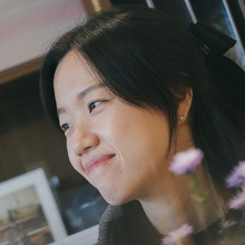
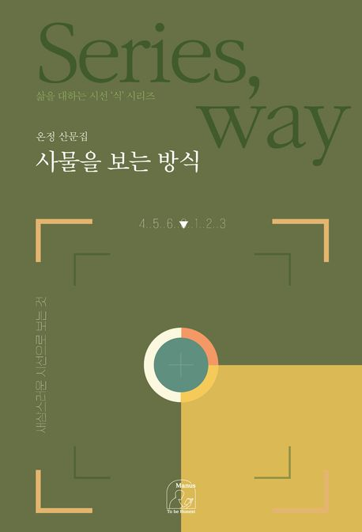
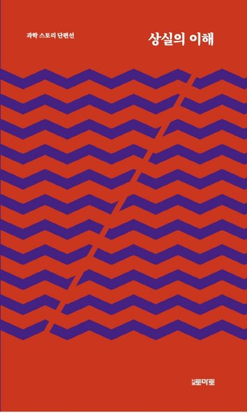
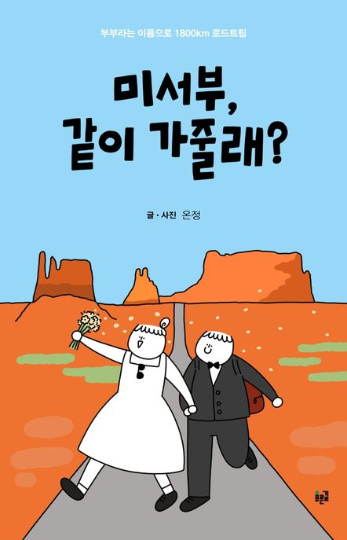

어떤 방식으로든
끊임없이 기록하는 사람.
소개

- 온정
- Onjung
1990년에 태어났다. 고분자공학으로 석사 학위를 받은 뒤 화학 연구원으로 일했지만 좀처럼 정착하지 못했다. 방황의 길목에서 글을 쓰기 시작하여 이제는 화학보다 글쓰기에 더 가까운 삶을 살고 있다. 지금까지 네 권의 에세이를 썼고, SF 앤솔로지에 단편 소설을 싣기도 했다.
당연한 듯 흘러가는 일상을 새삼스레 붙잡아두고 관찰하는 일을 좋아한다. 『사물을 보는 방식』 역시 그런 습관에서 시작되었다. 매일 생각 없이 하던 일들로부터, 가령 손톱을 깎고 설거지를 하고 양치를 하고 사과를 씹어 먹다가 글감을 얻었다. 사람들이 무심코 하는 행동이나 사물의 속성에도 배울 점이 있다는 걸 깨달았다. 그 이야기들을 부지런히 글로 옮기며, 오늘도 세상으로부터 인생을 배운다.
저서
- 2025

사물을 보는 방식산문집, 마누스 - 2024
 너를 돌보며 어른이 된다에세이, 마누스
너를 돌보며 어른이 된다에세이, 마누스 - 2022
 방황의 조각들에세이, 삼십춘기 화학 연구원의 방황 이야기, 마누스
방황의 조각들에세이, 삼십춘기 화학 연구원의 방황 이야기, 마누스 - 2021

상실의 이해과학 스토리 단편선, 공저, 월간토마토 - 2021

미서부, 같이 가줄래?에세이, 부부라는 이름으로 1800km 로드트립, 푸른길
수상과 선정
- 2026
- 『사물을 보는 방식』 오디오북 제작 지원 사업 선정한국출판문화산업진흥원, 제1차
- 2025
- 『사물을 보는 방식』 온라인 서점 3사 MD 추천알라딘, 예스24, 교보문고
- 『너를 돌보며 어른이 된다』 찾아가는 도서전(뉴욕) 개최 사업 선정한국출판문화산업진흥원
- 『너를 돌보며 어른이 된다』 오디오북 제작 지원 사업 선정한국출판문화산업진흥원, 제1차
- 2024
- 『너를 돌보며 어른이 된다』 대구 우수출판콘텐츠 선정대구출판산업지원센터
- 2022
- 『방황의 조각들』 ARKO 문학나눔 선정한국문화예술위원회
- 2021
- 제8회 과학소재 장르문학 단편소설 공모전 우수상대전정보문화산업진흥원
- 월간 『좋은생각』 제6회 청년이야기대상 장려상
강의와 활동
- 2026
- 화성시 신진작가 양성 과정 에세이 지도 강사14주 과정
- 『사물을 보는 방식』 글쓰기 워크숍과 북토크오세요 책방(동탄), 2주 과정
- '작가의 책상' 전시오세요 책방(동탄)
- 강연, 『사물을 보는 방식』 글쓰기 모임오운북앤바, 2주 과정
- '상반기를 정리하는 나의 이야기 쓰기, 에세이 입문' 강의경기도 평생학습 포털 GSEEK, 화상 강의
- 이마리 「안부」 작사
- 2025
- 『사물을 보는 방식』 북토크지금책방, 사사로운, 마블코북스
- 위올라잇 에세이 쓰기 클래스 '쓰담쓰담'5주 과정
- 오운북앤바 밍글링 파티 에세이 셀러 참여
- 한우리 독서지도사 자격증 취득